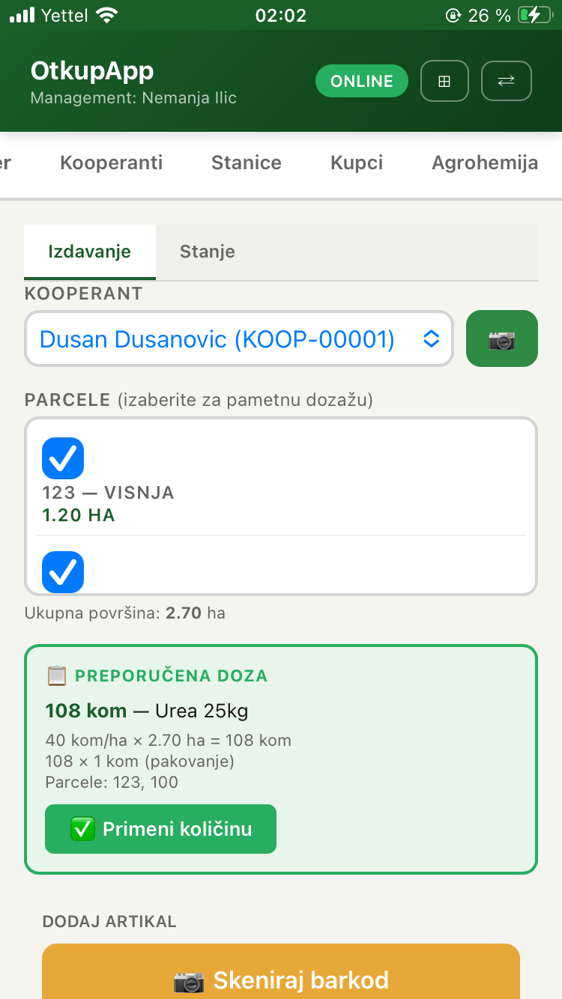

Saznajte više o svakom delu sistema.
AgriX Otkup ne završava se unosom robe. Dispečer modul daje pregled stanica koje čekaju, kamiona koji su slobodni i hladnjača ili kupaca koji traže robu. Time se otkup povezuje sa raspodelom, rutama i iskorišćenjem kapaciteta u realnom vremenu.
Za svaku zbirnu otpremnicu ili prijemnicu AgriX Otkup na klik generiše izveštaj o sledljivosti. Sistem povezuje robu sa kooperantom, parcelom, otkupom, transportom i prijemom.
Kada je potrebno, uz osnovni izveštaj dostupan je i dodatni izveštaj sa tretmanima i agrotehničkim merama sa parcele. Time sledljivost ne staje na toku robe, već se povezuje i sa proizvodnjom.
Izveštaj o sledljivosti
Pregled porekla robe, tokova i povezanih dokumenata.
Tretmani i agromere
Poseban izveštaj sa tretmanima vezanim za parcelu sa koje roba potiče.
Spremno za proveru
Dostupno odmah, bez ručnog skupljanja dokumentacije.
Kooperant se bira ili skenira, artikli se dodaju barkodom ili ručno, sistem formira korpu, ukupan iznos i završnu otpremnicu sa potpisima. Kada su povezane parcele, AgriX prikazuje i preporučenu dozu po površini.
Firma pritom ima pregled po kooperantima, po izdatim artiklima i po stanju magacina agrohemije.

AgriX Otkup ne pokazuje samo šta je otkupljeno. Pokazuje i kome je roba prodata, šta je fakturisano, šta je naplaćeno i gde postoji otvoren saldo. Operativa i komercijala rade nad istim podacima.

Po kooperantima
Pregled rada, inputa i robe po svakom kooperantu.
Po stanicama
Učinak, stanje i tokovi po svakoj otkupnoj stanici.
Po kupcima
Roba, fakture i saldo po kupcima.
Po robi
Otkup, prijem, otprema i povezani dokumenti.
Po agrohemiji
Stanje magacina i izdati inputi.